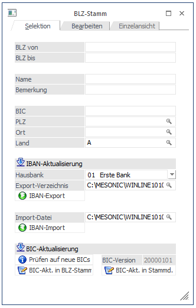
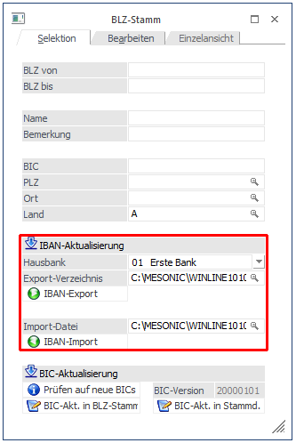
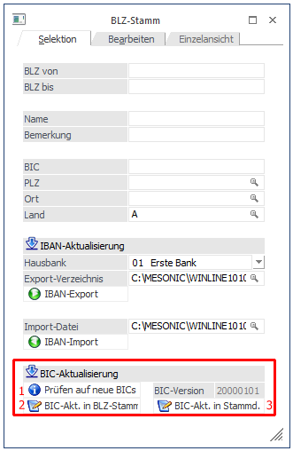
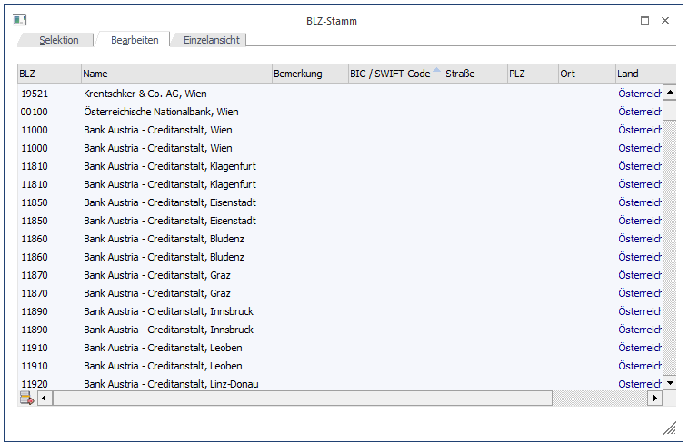
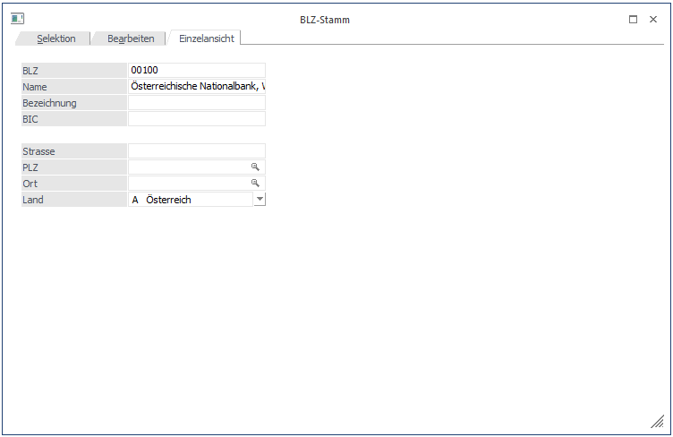
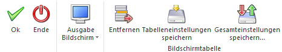

In jedem Feld, in dem eine Bankleitzahl eingegeben werden kann, kann durch Drücken der F9-Taste der Bankleitzahlen Matchcode aufgerufen werden.
Die Bankleitzahlen können grundsätzlich im Programm WinLine START im Menüpunkt
1 Optionen
1 Postleitzahlen
gepflegt werden.

Selektion
In diesem Register kann die Suche eingegrenzt werden. Weiters besteht die Möglichkeit, IBAN und BIC jeweils zu aktualisieren:
Ø IBAN-Aktualisierung
Um die IBAN-Aktualisierungen einspielen zu können, gibt es im WinLine START unter dem Menüpunkt
1 Optionen
1 Bankleitzahlen
die Möglichkeit, die vorhandene IBAN.csv zu exportieren und die von der Bank überarbeitete Datei wieder zu importieren.
Beim IBAN-Export werden die Bankverbindungen inaktiver Stammdatensätze wie Personenkonten, Kontakte, Vertreter, Arbeitnehmer A und D und Krankenkassen D nicht exportiert.

Ø BIC-Aktualisierung
Im WinLine START
1 Optionen
1 Bankleitzahlen
wird die BIC-Aktualisierung durchgeführt. Dieser Vorgang besteht aus drei Schritten.
1.Schritt
die WinLine wird auf eine neue BIC-Version überprüft. Die BIC-Version wird daneben im Format "yyyymmdd" angezeigt.
2. Schritt
Die BIC-Aktualisierung wird in den BLZ-Stamm geschrieben.
3. Schritt
Die BIC-Aktualisierung wird in die Stammdaten geschrieben. Sind in den Stammdaten bereits BIC-Daten vorhanden und die BIC-Aktualisierung bringt BIC-Änderungen mit sich, werden diese Daten editiert.
Bei den folgenden BIC- bzw. IBAN-Aktualisierungen wird bei Nichtvorhandensein eines Bank-LKZ stattdessen das LKZ vom Mandantenstamm übernommen:
ü BIC-Aktualisierung der Stammdaten,
ü IBAN-Export,
ü IBAN-Import und
ü IBAN-Berechnungsbutton (hier wird das Mandantenstamm-LKZ für die Berechnung der IBAN herangezogen (nur für A und D) und im jeweiligen Fenster in das LKZ-Feld geschrieben)

Bearbeiten

In diesem Register können die bereits vorhandenen BLZ separat nachbearbeitet, bzw. auch über den Entfernen-Button einzeln gelöscht werden.
Hinweis
Eine neue BLZ kann sofort in eine leere Zeile geschrieben werden. Damit diese auch korrekt verwendet werden kann, ist ebenso die gültige Eingabe des BIC erforderlich.
Einzelansicht

Zusätzlich zum Suchergebnis im Register "Bearbeiten" kann hier nochmals die selektierte BLZ angezeigt und bearbeitet werden.
Buttons

Ø OK
Durch Anklicken des OK-Buttons wird die Suche nach den eingegebenen Selektionen gestartet.
Ø Ende
Durch Anklicken des ENDE-Buttons wird das Fenster geschlossen.
Ø Ausgabe Bildschirm / Ausgabe Drucker
Mittels Auswahl kann festgelegt werden, ob die BLZ-Liste am Bildschirm oder auf dem Drucker ausgegeben werden soll.
Ø Entfernen (Register "Bearbeiten")
Sofern eine Zeile markiert und auf der Entfernen-Button betätigt wurde, wird die entsprechende Zeile in dunkelblauer Schrift markiert. Auf diese Weise können mehrere Zeilen unabhängig voneinander für den Löschvorgang vorgemerkt werden.
Achtung
Bei Drücken des OK-Buttons erfolgt keine Löschabfrage. Die markierten BLZ werden ohne Hinweis sofort gelöscht!
Hinweis1
So, wie einzelne Zeilen zum Löschen markiert werden können, können auch einzelne Felder in der Tabelle markiert und direkt bearbeitet werden. Es können auch mehrere doppelte BLZ angelegt werden. Die Änderungen werden ebenso ohne erneuten Hinweis übernommen, sobald der OK-Button betätigt wird.
Hinweis2
Um eine gültige BLZ einzutragen, wird ebenso die dazugehörige BIC (Bank Identifier Code) benötigt!
Ø Tabelleneinstellungen speichern (Register "Bearbeiten")
Die Spalten einer Tabelle können grundsätzlich an beliebige Positionen verschoben, bzw. in der Breite entsprechend angepasst werden. Durch Anwahl des Buttons "Tabelleneinstellungen speichern" werden die Einstellungen benutzerspezifisch gespeichert und bei dem nächsten Aufruf des Programmpunktes wieder vorgeschlagen.
Ø Gesamteinstellungen speichern (Register "Bearbeiten")
Im Gegensatz zu "Tabelleneinstellungen speichern" können mit "Gesamteinstellungen speichern" mehrere Tabellenaufbauten gespeichert und nach Wunsch geladen werden. Zusätzlich werden Sonderfunktionen der Tabelle (z.B. "Spalte gruppieren") ebenfalls bei der Speicherung bedacht.